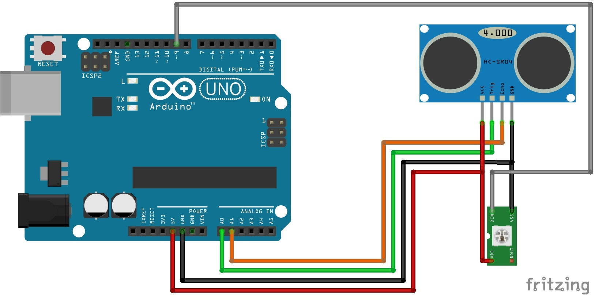

Avoid obstacles with an ultrasonic sensor¶
Requirements:¶
- Fully assembled Pan & Tilt Unit
- Arduino UNO (or similar)
- Ultrasonic Sensor Module (eg 1616245)
- RGB-LED WS2812
Schematic:¶

Figure S1
RGB-LED WS2812¶
DIN → 9
DOUT → empty
VSS(VCC): → 5V
VDD(GND): → GND
HC-SR04¶
Trig → A0
Echo → A1
VCC → 5V
GND → GND
Funcions:¶
Description:¶
The demo shows how the MAKERFACTORY Robobug can start walking automatically and avoid obstacles with help of an ultrasonic sensor HC-SR04.
Plug in:¶
After plugging in the power supply, the Robobug gives a melody and waits for the start signal.
Start:¶
Press the button T1 on the locomotion controller board. The Robobug gets up on its feet and starts walking in a straight direction.
Measuring:¶
The head turns frequently from left to right, so the ultrasonic sensor continuously measures the distance to all obstacles in a range of 60° (30° left and 30° right) and the RGB LED blinks in blue and green.
Detect obstacle with distance < 60cm:¶
The RGB LED turns red and the Robobug turns around until there is no other obstacle nearer than 90cm.
Detect obstacle with distance < 30cm:¶
The RGB LED turns red and the Robobug walks backwards (=escape behavior). After that, it turns around until there is no other obstacle nearer than 90cm.
Parameters:¶
| PARAMETER | Description | Default |
| SERVO_TILT_PIN | Servo Tilt Pin | SU1 |
| SERVO_PAN_PIN | Servo Pan Pin | SU2 |
| WS2812_PIN | RGB-LED-Pin | SU3 (PIN 9) |
| SR04_TRG_PIN | Ultrasonic Trigger Pin | A0 |
| SR04_ECHO_PIN | Ultrasonic Echo Pin | A1 |
| PAN_CENTER | Lower value ⇒ head goes left | 100 |
| TILT_CENTER | Lower value ⇒ head goes up | 95 |
| PAN_SCANDEG | Scan Degree (Degrees from center) | 30 |
| COLLISION_THRESH | Threshold for obstacles to turn | 60 |
| COLLISION_THRESH_FREE | Threshold for obstacles to escape | 30 |
| BASIC_DELAY | Basic delay to move backwards | 1500 |
| MIN_RND_DELAY | Min random delay to move backw. | 500 |
| MAX_RND_DELAY | Max random delay to move backw. | 2000 |
| MOVE_SPEED | Basic movement speed | 20 |
Code:¶
1 2 3 4 5 6 7 8 9 10 11 12 13 14 15 16 17 18 19 20 21 22 23 24 25 26 27 28 29 30 31 32 33 34 35 36 37 38 39 40 41 42 43 44 45 46 47 48 49 50 51 52 53 54 55 56 57 58 59 60 61 62 63 64 65 66 67 68 69 70 71 72 73 74 75 76 77 78 79 80 81 82 83 84 85 86 87 88 89 90 91 92 93 94 95 96 97 98 99 100 101 102 103 104 105 106 107 108 109 110 111 112 113 114 115 116 117 118 119 120 121 122 123 124 125 126 127 128 129 130 131 132 133 134 135 136 137 138 139 140 141 142 143 144 145 146 147 148 149 150 151 152 153 154 155 156 157 158 159 160 161 162 163 164 165 166 167 168 169 170 171 172 173 174 175 176 177 178 179 180 181 182 183 184 185 186 187 188 189 190 191 192 193 194 195 196 197 198 199 200 201 202 203 204 205 206 207 208 209 210 211 212 213 214 215 216 217 218 219 220 221 222 223 224 225 226 227 228 229 230 231 232 233 234 235 236 237 238 239 240 241 242 243 244 245 246 247 248 249 250 251 252 253 254 255 256 257 258 259 260 261 262 263 264 265 266 267 268 269 270 271 272 273 274 275 276 277 278 279 280 281 282 283 284 285 286 287 288 289 290 291 292 293 294 295 296 297 298 299 300 301 302 303 304 305 306 307 308 309 310 311 312 313 314 315 316 317 318 319 320 321 322 323 324 325 326 327 328 329 330 331 332 333 334 335 336 337 338 339 340 341 342 343 344 345 346 347 348 349 350 351 352 353 354 355 356 357 358 359 360 361 362 363 364 365 366 367 368 369 370 371 372 373 374 375 376 377 378 379 380 381 382 383 384 385 386 387 388 389 390 391 392 393 394 395 396 397 398 399 400 401 402 403 404 405 406 407 408 409 410 411 412 413 414 415 416 417 418 419 420 421 422 423 424 425 426 427 428 429 430 431 432 433 434 435 436 437 438 439 440 441 442 443 444 445 446 447 448 449 450 451 452 453 454 455 456 457 458 459 460 461 462 463 464 465 466 467 468 469 470 471 472 473 474 475 476 477 478 479 480 481 482 483 484 485 486 487 488 489 490 491 492 493 494 495 496 497 498 | /****************************************************************** Created with PROGRAMINO IDE for Arduino Project : MAKERFACTORY Ultrasonic Demo (Snoopy Logic) Author : UlliS Description : The demo shows how the MAKERFACTORY can avoid obstacles with the Pan & Tilt unit and an ultrasonic sensor HC-SR04. Userboard is ARDUINO UNO --------------------------- - IR Daten 7 - SU1 6 Pan - SU2 5 Tilt - SU3 9 +/- WS2812 - A0 US Trigger - A1 US Echo - A4 free - A5 free - 10 free ******************************************************************/ #include <Adafruit_NeoPixel.h> // https://github.com/adafruit/Adafruit_NeoPixel #ifdef __AVR__ #include <avr/power.h> #endif #include <Servo.h> // Arduino #define ARDUINO #include <Hexapod_Lib.h> /****************************************************************************** WS2812 RGB-LED ******************************************************************************/ // WS2812/13 (Neopixel) smart RGB LED #define WS2812_PIN SU3 // Parameter 1 = number of pixels in strip // Parameter 2 = Arduino pin number (most are valid) // Parameter 3 = pixel type flags, add together as needed: // NEO_KHZ800 800 KHz bitstream (most NeoPixel products w/WS2812 LEDs) // NEO_KHZ400 400 KHz (classic 'v1' (not v2) FLORA pixels, WS2811 drivers) // NEO_GRB Pixels are wired for GRB bitstream (most NeoPixel products) // NEO_RGB Pixels are wired for RGB bitstream (v1 FLORA pixels, not v2) // NEO_RGBW Pixels are wired for RGBW bitstream (NeoPixel RGBW products) Adafruit_NeoPixel pixel = Adafruit_NeoPixel(1, WS2812_PIN, NEO_GRB + NEO_KHZ800); /****************************************************************************** HC-SR04 ULTRASONIC SENSOR ******************************************************************************/ // pins for ultrasonic sensor #define SR04_TRG_PIN A0 #define SR04_ECHO_PIN A1 /****************************************************************************** SERVO PAN & TILT ******************************************************************************/ // declare your servo as an object #define SERVO_PAN_PIN SU2 #define SERVO_TILT_PIN SU1 Servo servo_pan; Servo servo_tilt; #define PAN_CENTER 100 // lower value scanner more left #define TILT_CENTER 95 // lower value scanner more up #define PAN_SCANDEG 30 #define PAN_LEFTMAX (PAN_CENTER - PAN_SCANDEG) #define PAN_RIGHTMAX (PAN_CENTER + PAN_SCANDEG) #define COLLISION_THRESH 60 // threshold for obstacles (in cm) #define COLLISION_THRESH_FREE 30 // threshold for obstacles + cm #define BASIC_DELAY 1500 #define MIN_RND_DELAY 500 #define MAX_RND_DELAY 2000 #define MOVE_SPEED 20 int pos = 0; /****************************************************************************** SETUP ******************************************************************************/ void setup() { // WS2812 RGB-LED pixel.begin(); // this initializes the NeoPixel library. WS2812_SET_RGB(255,255,255); // high-Z for the audio output pinMode(PA_PIN,INPUT); digitalWrite(PA_PIN,LOW); // switches T1 and T2 pinMode(T1,INPUT); pinMode(T2,INPUT); // HC-SR04 pinMode(SR04_TRG_PIN, OUTPUT); pinMode(SR04_ECHO_PIN, INPUT); // open serial communications and wait for port to open: Serial.begin(SERIAL_STD_BAUD); while(!Serial); // set the data rate for the SoftwareSerial port (User-Board to Locomotion-Controller) SERIAL_CMD.begin(SERIAL_CMD_BAUD); // reset the Locomotion-Controller ROBOT_RESET(); delay(250); ROBOT_RESET(); delay(150); ROBOT_RESET(); // wait for Boot-Up delay(1500); ROBOT_INIT(); // pan & tilt servos servo_pan.attach(SERVO_PAN_PIN); servo_tilt.attach(SERVO_TILT_PIN); servo_pan.write(PAN_CENTER); servo_tilt.write(TILT_CENTER); // rnd init randomSeed(analogRead(0)); // RBG LED for(int i = 0; i < 765; i++) { WS2812_ColorSweep(i); delay(5); } WS2812_SET_RGB(0,255,0); // green // print a hello world over the USB connection Serial.println("> Hello here is the MAKERFACTORY Robobug"); } /****************************************************************************** MAIN LOOP ******************************************************************************/ void loop() { // start demo if(!digitalRead(T1)) { delay(50); if(!digitalRead(T1)) { MSound(1, 100, 1000); move_init(); // turn center to left (soft start up) for (pos = PAN_CENTER; pos >= PAN_LEFTMAX; pos -= 1) { // in steps of 1 degree servo_pan.write(pos); delay(20); } while(1) { // forward move_fwd(100); // scanner turn to full right for (pos = PAN_LEFTMAX; pos <= PAN_RIGHTMAX; pos += 1) { WS2812_SET_RGB(0,0,255); // blue while (SR04_DISTANCE() < COLLISION_THRESH) { WS2812_SET_RGB(255,0,0); // red if (pos <= PAN_CENTER) // obstacle left { // turn right while (SR04_DISTANCE() < COLLISION_THRESH + COLLISION_THRESH_FREE) { checktonear(); // check min. distance turn_right(BASIC_DELAY+random(MIN_RND_DELAY, MAX_RND_DELAY)); // rnd delay for better escape behavior } // forward move_fwd(100); } else if (pos > PAN_CENTER) // obstacle right { // turn left while (SR04_DISTANCE() < COLLISION_THRESH + COLLISION_THRESH_FREE) { checktonear(); // check min. distance turn_left(BASIC_DELAY+random(MIN_RND_DELAY, MAX_RND_DELAY)); // rnd delay for better escape behavior } // forward move_fwd(100); } } // sweep servo servo_pan.write(pos); } // forward move_fwd(100); // scanner turn to full left for (pos = PAN_RIGHTMAX; pos >= PAN_LEFTMAX; pos -= 1) { WS2812_SET_RGB(0,255,0); // green while (SR04_DISTANCE() < COLLISION_THRESH) { WS2812_SET_RGB(255,0,0); // red if (pos <= PAN_CENTER) // obstacle left { // turn right while (SR04_DISTANCE() < COLLISION_THRESH + COLLISION_THRESH_FREE) { checktonear(); // check min. distance turn_right(BASIC_DELAY+random(MIN_RND_DELAY, MAX_RND_DELAY)); // rnd delay for better escape behavior } // forward move_fwd(100); } else if (pos > PAN_CENTER) // obstacle right { // turn left while (SR04_DISTANCE() < COLLISION_THRESH + COLLISION_THRESH_FREE) { checktonear(); // check min. distance turn_left(BASIC_DELAY+random(MIN_RND_DELAY, MAX_RND_DELAY)); // rnd delay for better escape behavior } // forward move_fwd(100); } } // sweep servo servo_pan.write(pos); } } } } } /****************************************************************************** MOVE ******************************************************************************/ void move_init() { // basic robot movement parameter ROBOT_PWR_ON(); delay(1000); ROBOT_SPEED(MOVE_SPEED); ROBOT_HEIGHT(35); } void checktonear() { // min. distance, too close to the obstacle if (SR04_DISTANCE()<COLLISION_THRESH_FREE) // backward, to near { move_bwd(BASIC_DELAY+random(MIN_RND_DELAY, MAX_RND_DELAY)); } } void move_fwd(int t) { // [lateral],[move],[turn] // move = 0 -> max speed forward //----------------------- // lateral [0 to 255] //----------------------- // 128 = stop // 0 = full speed left // 255 = full speed right //----------------------- // move [0 to 255] //----------------------- // 128 = stop // 0 = full speed forward // 255 = full speed backward //----------------------- // turn [0 to 255] //----------------------- // 128 = stop // 0 = full speed left // 255 = full speed right SendData(CMD_REG_WALK, 128, 0, 128, 0); delay(t); } void move_bwd(int t) { // [lateral],[move],[turn] // move = 255 -> max speed backward //----------------------- // lateral [0 to 255] //----------------------- // 128 = stop // 0 = full speed left // 255 = full speed right //----------------------- // move [0 to 255] //----------------------- // 128 = stop // 0 = full speed forward // 255 = full speed backward //----------------------- // turn [0 to 255] //----------------------- // 128 = stop // 0 = full speed left // 255 = full speed right SendData(CMD_REG_WALK, 128, 255, 128, 0); delay(t); } void turn_left(int t) { // [lateral],[move],[turn] // turn = 0 -> max speed left //----------------------- // lateral [0 to 255] //----------------------- // 128 = stop // 0 = full speed left // 255 = full speed right //----------------------- // move [0 to 255] //----------------------- // 128 = stop // 0 = full speed forward // 255 = full speed backward //----------------------- // turn [0 to 255] //----------------------- // 128 = stop // 0 = full speed left // 255 = full speed right ROBOT_TRANSLATE_MODE(128,128,60,128); SendData(CMD_REG_WALK, 128, 128, 25, 0); delay(t); ROBOT_TRANSLATE_MODE(128,128,128,128); } void turn_right(int t) { // [lateral],[move],[turn] // turn = 255 -> max speed right //----------------------- // lateral [0 to 255] //----------------------- // 128 = stop // 0 = full speed left // 255 = full speed right //----------------------- // move [0 to 255] //----------------------- // 128 = stop // 0 = full speed forward // 255 = full speed backward //----------------------- // turn [0 to 255] //----------------------- // 128 = stop // 0 = full speed left // 255 = full speed right ROBOT_TRANSLATE_MODE(128,128,60,128); SendData(CMD_REG_WALK, 128, 128, 230, 0); delay(t); ROBOT_TRANSLATE_MODE(128,128,128,128); } void stop_move(int t) { // [lateral],[move],[turn] // all = 128 -> stop //----------------------- // lateral [0 to 255] //----------------------- // 128 = stop // 0 = full speed left // 255 = full speed right //----------------------- // move [0 to 255] //----------------------- // 128 = stop // 0 = full speed forward // 255 = full speed backward //----------------------- // turn [0 to 255] //----------------------- // 128 = stop // 0 = full speed left // 255 = full speed right SendData(CMD_REG_WALK, 128, 128, 128, 0); delay(t); } /****************************************************************************** HC-SR04 FUNCTIONS ******************************************************************************/ int SR04_DISTANCE() { long duration = 0; int distance = 0; // AVG value (2 samples) for (int i = 0; i < 2; i++) { // Clears the trigPin digitalWrite(SR04_TRG_PIN, LOW); delayMicroseconds(2); // Sets the trigPin on HIGH state for 10 micro seconds digitalWrite(SR04_TRG_PIN, HIGH); delayMicroseconds(10); digitalWrite(SR04_TRG_PIN, LOW); // Reads the echoPin, returns the sound wave travel time in microseconds duration = pulseIn(SR04_ECHO_PIN, HIGH); // Calculating the avg distance distance += duration*0.034/2; delay(5); } return round(distance/2); // cm } /****************************************************************************** WS2812 RGB-LED FUNCTIONS ******************************************************************************/ void WS2812_ColorSweep(int i) { // WS2812 color change // Farbwerte mit Vorbesetzung, begonnen wird mit rot static int red = 255; static int green = 0; static int blue = 0; if (i < 255) // Phase 1: von rot nach grün { red--; // red down green++; // green up blue = 0; // blue low } else if (i < 510) // Phase 2: von grün nach blau { red = 0; // red low green--; // green down blue++; // blue up } else if (i < 766) // Phase 3: von blau nach rot { red++; // red up green = 0; // green low blue--; // blue down } pixel.setPixelColor(0, pixel.Color(red, green, blue)); pixel.show(); } void WS2812_SET_RGB(byte r, byte g, byte b) { // WS2812 color change pixel.setPixelColor(0, pixel.Color(r, g, b)); pixel.show(); } |